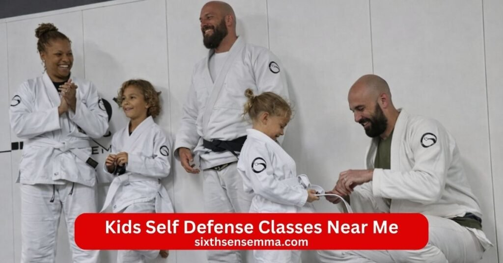
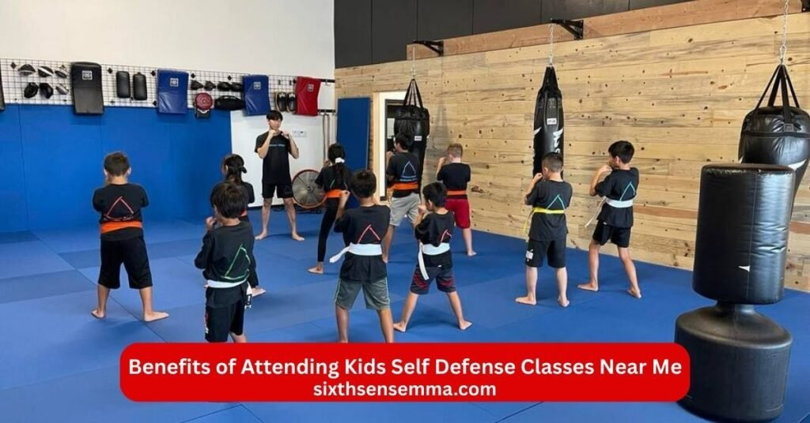
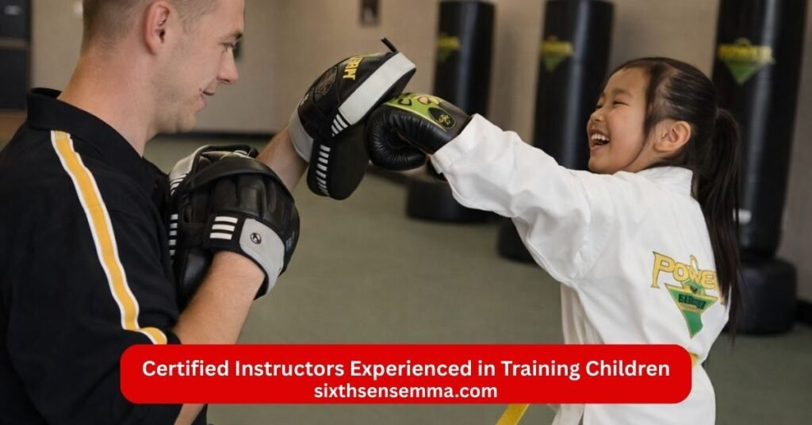

Kids Self Defense Classes Near Me Safe Fun & Confidence Building Training for Children

Kids Self Defense Classes Near Me give children practical tools to stay safe feel more confident and grow stronger in both body and mind. At Sixth Sense MMA we offer Kids Self Defense Classes Near Me that teach real self defense self defense self defense self defense training self defense techniques self defense classes through kids martial arts kids karate kids mma brazilian jiu jitsu program jiu jitsu bjj brazilian jiu jitsu karate muay thai kickboxing muay thai classes muay thai kickboxing and krav maga in a safe positive space. Instructors guide beginner kids teenager and even adult in classes for adults with clear fun lessons that fit every age and skill level.
What Kids Will Learn in Kids Self Defense Classes Near Me
Kids Self Defense Classes Near Me teach children real tools to stay safe feel stronger and grow confident every week. Local martial arts programs martial arts schools training center gym and martial arts classes offer kids martial arts kids karate kids mma brazilian jiu jitsu program jiu jitsu bjj brazilian jiu jitsu karate muay thai kickboxing muay thai classes muay thai kickboxing and krav maga so kids build a strong skill set. Classes teach practical moves in a supportive environment with instructor who know how to work with children teenager and even adult in classes for adults.
Situational Awareness and Threat Recognition
Kids start with situational awareness so they notice things around them before trouble starts. Classes show how to spot unusual behavior read body language and trust gut feelings when something feels wrong. Children learn simple ways to avoid danger walk safely and keep distance from possible opponent or attacker. Instructors use fun games and real examples so kids practice staying alert without fear. This skill helps them make smart choices stay calm and stay calm in everyday places like school parks or streets.
Basic Striking Kicking and Grappling Techniques
Kids practice basic strike kicking and grappling moves from jiu jitsu bjj muay thai kickboxing and karate. They learn safe punch open hand strikes front kicks and simple grapple holds that use body position not just strength. Instructors break each martial arts techniques into small steps so children master form balance and timing. Drill repeat moves until they feel natural. Kids gain power quick reflexes and the ability to create space or control a situation without hurting others more than needed.
How to Escape Common Grabs and Holds
A big part of Kids Self Defense Classes Near Me focuses on escaping grabs holds and pins that happen in real life. Children learn wrist escapes from someone grabbing their arm ways to break free from bear hugs or chokes and how to slip out when pushed or pulled. Brazilian jiu jitsu jiu jitsu and krav maga ideas help kids use leverage hips and quick twists to get away fast. Instructors practice these escapes slowly then faster so kids build muscle memory and confidence. They teach kids to yell run to safety and get help right after breaking free.
Confidence Focus and Emotional Control
Self confidence self discipline self control and focus grow strong through regular training. Kids feel proud when they land a good move finish a tough drill or help a classmate. Classes teach breathing techniques to stay calm when upset or scared which helps in school arguments or tough moments. Children learn to listen follow directions and keep trying even when things feel hard. Instructors praise effort so kids build a positive mindset that carries into homework tests friendships and daily challenges.
Teamwork and Social Skills
Kids practice teamwork and social skills by working with partners holding pads cheering friends and taking turns. Classes create a supportive space where children encourage each other share laughs and build friendship. They learn respect listen to instructor and help classmates which makes the gym feel like a team. These moments teach kids to cooperate solve small problems together and treat others kindly. Families see children become more polite helpful and comfortable around new people.
Age Groups for Kids Self Defense Classes Near Me
Kids Self Defense Classes Near Me fit different ages so every child gets training that matches their size energy and understanding. Local martial arts programs martial arts schools training center gym and martial arts classes divide kids into clear groups with instructor who know how to teach children safely and effectively. Kids martial arts kids karate kids mma brazilian jiu jitsu program jiu jitsu bjj brazilian jiu jitsu karate muay thai kickboxing muay thai classes muay thai kickboxing and krav maga all adjust moves drill and games for each stage. Classes teach self defense self training self defense techniques self defense classes in a supportive environment where kids beginner to more skilled build skill set self confidence self discipline self control and a strong martial arts mindset. Parents see their children get fit make friendship show personal growth and feel ready to defend themselves.
Little Warriors (Ages 4–6)
The Little Warriors group welcomes very young children ages 4 to 6 who want to start learning self defense in a playful way. Classes use games songs and simple movements to teach basic strike safe kicks balance and how to say no or run if needed. Instructors focus on fun situational awareness like noticing surroundings and trusting feelings when something seems off. Kids practice easy escapes from gentle holds and learn to yell for help. Everything stays light no hard contact just building coordination listening skills and early self confidence. Little ones leave smiling more active and with simple tools that make them feel a bit braver in daily life.
Junior Defense Program (Ages 7–10)
Kids ages 7 to 10 join the Junior Defense Program where training gets a bit more structured but keeps the energy high and positive. They work on clean striking kicking grappling basics from jiu jitsu bjj muay thai kickboxing and karate. Classes teach how to escape common grabs wrist holds and pushes with quick twists and leverage. Instructors add drill for threat recognition staying calm and creating space from an attacker or opponent. Kids practice partner work light safe spar and teamwork so they build physicality physical fitness and the ability to stay calm under pressure. This age group gains stronger self control better focus and the mindset to handle real world situations smartly while having fun and making friends.
Pre Teen & Teen Program (Ages 11–15)
The Pre Teen & Teen Program suits older kids ages 11 to 15 who need more challenge and deeper skills for real life safety. Classes cover advanced self defense techniques controlled sparring escapes from stronger holds ground grappling and strike combinations from brazilian jiu jitsu krav maga muay thai and kickboxing. Instructors teach reading body language spotting danger early using voice to set boundaries and responding fast if needed. Teens practice realistic scenarios build explosive power endurance and mental toughness. They develop a sharp martial arts mindset self discipline and self confidence that helps with school pressure social situations and personal safety. This group often sees big jumps in skill set physical fitness and the quiet assurance that comes from knowing they can defend themselves well.

Benefits of Attending Kids Self Defense Classes Near Me
Kids Self Defense Classes Near Me bring real changes that help children grow stronger safer and happier every week. Local martial arts programs martial arts schools training center gym and martial arts classes offer kids martial arts kids karate kids mma brazilian jiu jitsu program jiu jitsu bjj brazilian jiu jitsu karate muay thai kickboxing muay thai classes muay thai kickboxing and krav maga so kids build a strong skill set in a supportive environment. Classes teach self defense self defense self defense self defense training self defense techniques self defense classes with fitness physical fitness physicality and important life lessons. Instructors guide children beginner to more skilled while they get fit make friendship show personal growth and develop a positive martial arts mindset. Parents notice their kids become more active focused and sure of themselves after regular sessions.
Enhanced Physical Fitness and Coordination
Kids get much better physical fitness and coordination from Kids Self Defense Classes Near Me. Strike kicking grappling drill and movement games work the whole body so children build strength speed balance and quick reflexes. Classes include fun exercises that raise heart rate improve agility and help kids move smoother in sports play or daily activities. Physicality grows naturally as they practice escapes holds and counters which makes them stronger and more coordinated without feeling like boring workouts. Many parents see their children run faster jump higher and handle things like bikes or playground equipment with better control after just a few months.
Improved Confidence and Self Esteem
Self confidence self discipline self control and self esteem rise fast in these classes. Children feel proud when they master a new move complete a tough drill or help a friend during partner work. Instructors praise effort and progress so kids believe in themselves more each week. They learn to stay calm under pressure face small challenges and stand tall knowing they can defend themselves if needed. This inner strength shows up at school with better participation around friends with less shyness and at home with more willingness to try new things. Families often say their child walks in with a bigger smile and carries that quiet assurance everywhere.
Awareness of Personal Safety
Kids gain strong situational awareness and a clear sense of personal safety through practical lessons. Classes teach how to spot possible attacker or opponent notice unsafe situations and trust instincts when something feels off. Children practice staying alert keeping distance using voice to set boundaries and making smart choices to avoid trouble. Instructors use real real world examples and role play so kids understand how to defend escape or get help quickly. This knowledge helps them feel safer walking to school playing outside or meeting new people while they build the mindset to stay prepared without constant worry.
Fun Engaging and Social Learning Environment
Kids Self Defense Classes Near Me turn learning into something children really enjoy with games partner activities and group challenges. Classes mix action laughs and teamwork so kids look forward to every session. They work together hold pads cheer friends and build friendship in a supportive space where everyone encourages each other. Instructors keep energy high with fun drill and positive feedback so training never feels boring. Children make new friends share high fives and learn to cooperate which helps them socially too. The supportive environment makes martial arts feel like playtime with purpose so kids stay excited and keep coming back week after week.
Safety Measures in Kids Self Defense Classes Near Me
Kids Self Defense Classes Near Me put safety first so children can learn self defense self defense self defense self defense training self defense techniques self defense classes without worry. Local martial arts programs martial arts schools training center gym and martial arts classes use strict rules and careful planning to keep every kids martial arts kids karate kids mma brazilian jiu jitsu program jiu jitsu bjj brazilian jiu jitsu karate muay thai kickboxing muay thai classes muay thai kickboxing and krav maga session safe. Instructors watch closely classes teach proper form and create a supportive environment where beginner kids teenager and even adult in classes for adults feel protected. Safety helps children focus on building skill set self confidence self discipline self control physical fitness and a strong martial arts mindset while they get fit make friendship and show personal growth.
Protective Gear and Controlled Training
Protective gear stays required in every Kids Self Defense Classes Near Me to keep children safe during strike grappling drill and partner work. Instructors limit training to controlled moves no full power hits hard throws or risky actions until kids show perfect form and control. Classes use slow practice then build speed only when ready. Controlled sparring follows clear rules with instructor stopping anything unsafe right away. This setup lets children practice self defense techniques escapes and counters while staying protected and learning to stay calm without fear of getting hurt.
Supervised Classes with Qualified Instructors
Every class has close supervision from qualified instructors who stay focused on every child the whole time. Instructors hold certifications in kids martial arts brazilian jiu jitsu krav maga and child safety training so they know how to teach moves correctly and spot problems fast. They pair kids by size age and skill watch form correct mistakes and give constant feedback. No child works alone or out of sight instructors keep eyes on the whole group enforce rules and step in immediately if needed.
Clean Secure and Child Friendly Facility
The gym training center and martial arts schools stay clean secure and made just for children. Mats get deep cleaned daily equipment wiped down after use and the whole space has good air flow lighting and open layout so nothing feels crowded or dark. Doors stay monitored parents can watch from viewing areas and check in rules make sure only approved people enter. The facility feels welcoming bright and child friendly with fun decorations safe equipment and no sharp edges or hazards. Kids feel comfortable relaxed and happy to train in a place designed for them which helps them focus on learning practical self defense physical fitness and teamwork in a supportive environment.
Class Schedule Pricing and Free Trial
Kids Self Defense Classes Near Me fit busy family schedules so children can train regularly without stress. Local martial arts programs martial arts schools training center gym and martial arts classes offer kids martial arts kids karate kids mma brazilian jiu jitsu program jiu jitsu bjj brazilian jiu jitsu karate muay thai kickboxing muay thai classes muay thai kickboxing and krav maga with options that work for school homework and family time. Instructors run self defense self defense self defense self defense training self defense techniques self defense classes in a supportive environment so beginner kids teenager and even adult in classes for adults progress safely. Classes teach skill set self confidence self discipline self control physical fitness and a strong martial arts mindset while kids get fit make friendship and show personal growth. Pricing stays reasonable with flexible plans and a free trial to try before committing.
Flexible Class Timings for Busy Families
Flexible class timings make it easy for families to join Kids Self Defense Classes Near Me. Weekday mornings early sessions help after school routines evening classes suit busy parents and weekends give longer slots for family practice. Classes run at different hours so you pick what matches homework sports or work. Instructors keep sessions focused energetic and short enough for young attention spans but long enough for real learning. This setup lets kids attend consistently without missing other activities. Many parents say these choices make training part of the weekly routine so children build self defense techniques physicality and confidence steadily.
Beginner Intermediate and Advanced Levels
Beginner intermediate and advanced levels let every child train at the right spot. Beginners start with basics like stance balance simple strike kicks and easy escapes that feel safe and clear. Intermediate kids add combos timing partner work and stronger grappling from bjj jiu jitsu muay thai kickboxing and karate. Advanced students practice realistic scenarios controlled sparring and quick responses to attacker or opponent. Instructors group by age skill and energy so no one feels rushed or bored. Kids move up naturally as they master moves which keeps them motivated and excited to learn more self defense self defense classes and martial arts techniques.
Private Training Options
Private training options give your child one on one time with instructors for focused help. These sessions let kids work on specific needs like fixing a weak escape building faster strike or gaining more self confidence in front of others. Instructors tailor everything to your child’s skill set pace and goals so progress happens quicker. Private work fits into your schedule and adds extra attention when regular classes need a boost. Families use these for overcoming challenges preparing for real situations or simply giving their child more personal guidance. It makes self defense training even more effective while keeping things fun and supportive.
Free Trial Class Available
Try Kids Self Defense Classes Near Me with no cost through a free trial class. Come see a full session where kids learn basic self defense techniques play fun games practice escapes and work with partners in a supportive environment. Instructors explain everything make children feel welcome answer parent questions and show how classes run. No pressure to sign up right away families just experience the energy the physical fitness benefits and the positive vibe. Many kids love their first class so much they ask to come back the next week. This free trial helps you see if the martial arts classes fit your child before committing to regular training.
Why Choose Sixth Sense MMA for Kids Self Defense Classes Near Me
Sixth Sense MMA stands out as the best place for Kids Self Defense Classes Near Me because we focus on real safety strong skills and a positive experience every child deserves. Our martial arts programs martial arts schools training center gym and martial arts classes teach kids martial arts kids karate kids mma brazilian jiu jitsu program jiu jitsu bjj brazilian jiu jitsu karate muay thai kickboxing muay thai classes muay thai kickboxing and krav maga in a way that builds skill set self confidence self discipline self control physical fitness and a solid martial arts mindset. Instructors create a supportive environment where beginner kids teenager and even adult in classes for adults feel safe and motivated. Families choose us because children get fit make friendship show personal growth and learn to defend themselves with practical tools that work in real life.

Certified Instructors Experienced in Training Children
Our certified instructors have years of experience teaching children specifically so they know exactly how to make self defense self defense self defense self defense training self defense techniques self defense classes fun safe and effective for young minds. They hold training in kids martial arts brazilian jiu jitsu krav maga karate muay thai kickboxing and child development so every drill and move gets explained clearly and adjusted for age and ability. Instructors use positive words patient guidance and clear steps to help kids stay calm understand situational awareness and build self confidence step by step. Parents trust them because they watch closely correct form gently and celebrate every small win which keeps children excited and progressing.
Safe Supportive and Child Friendly Environment
Safety comes first in every Kids Self Defense Classes Near Me at Sixth Sense MMA. The gym stays clean secure and child friendly with padded mats good lighting open space and constant supervision. Instructors enforce strict rules light contact only proper protective gear and no rough play so kids train without fear of getting hurt. The supportive environment means children cheer each other high five after good moves and help classmates which builds friendship and teamwork. Parents can watch from viewing areas knowing their child stays safe happy and encouraged. This caring space lets kids focus on learning self defense techniques physical fitness and positive habits without any worry.
Age Appropriate Curriculum for Kids of All Skill Levels
The curriculum stays age appropriate so every child trains in ways that match their body understanding and energy. Younger kids start with fun games simple escapes and basic strike while older ones add stronger grappling combos and realistic scenarios from bjj jiu jitsu muay thai kickboxing and krav maga. Instructors adjust difficulty so beginner feel comfortable and more skilled kids get challenged without frustration. Classes build from easy drill to controlled sparring as children grow which keeps everyone engaged and moving forward. This smart approach helps kids of all ages defend against attacker opponent stay safe and develop a strong martial arts mindset that fits them perfectly.
Programs Designed for Beginners and Advanced Young Students
Programs fit beginners and advanced young students so no child feels left out or pushed too hard. Beginners learn basics like stance balance escapes and simple self defense moves with lots of encouragement and slow practice. Advanced kids move into tougher drill controlled sparring strategy and quick responses that build real world readiness. Instructors group by skill and age then track progress so everyone advances naturally. Beginner gain self confidence fast while advanced students sharpen skill set and physicality. Families love how these programs keep kids motivated growing and excited whether they just started or have been training for years.
Contact US
If you want to learn more about Kids Self Defense Classes Near Me at Sixth Sense MMA check class times book a free trial class ask about pricing or get details on kids martial arts kids karate kids mma brazilian jiu jitsu program jiu jitsu bjj brazilian jiu jitsu karate muay thai kickboxing muay thai classes muay thai kickboxing or krav maga just reach out. We are here to help parents find the right fit for their child so kids can build self defense self confidence self discipline self control physical fitness and a strong martial arts mindset in a safe fun space.
Conclusion
Kids Self Defense Classes Near Me at Sixth Sense MMA give children much more than just moves to stay safe they build stronger bodies sharper minds and real confidence that lasts a lifetime. From the first first class kids step into a clean supportive environment where certified instructors teach self defense self defense self defense self defense training self defense techniques self defense classes through kids martial arts kids karate kids mma brazilian jiu jitsu program jiu jitsu bjj brazilian jiu jitsu karate muay thai kickboxing muay thai classes muay thai kickboxing and krav maga in ways that fit every age and level.
- 817 S MacArthur Blvd #100 Coppell TX 75019 United States
- (469) 972 7800
- info@sixthsensemma.com
Follow Us on Social Media
Stay connected with Sixth Sense MMA through our social media channels. Follow us for class updates, training tips, and a closer look at our self defense community.
FAQ’s
The “best” self defense class for children is subjective and depends on goals like building confidence, discipline or practical skills. Krav Maga is often recommended as a top choice for reality based self defense focusing on real world scenarios and building safety awareness without heavy emphasis on competition. Brazilian Jiu Jitsu (BJJ) is another strong option teaching ground fighting and leverage which is effective for smaller kids against larger threats. Other popular classes include Karate for discipline and basic strikes or mixed martial arts (MMA) for a well rounded approach combining striking and grappling. Consider your child’s age interests and the instructor’s qualifications when choosing.
Children can start learning self defense as early as 4 years old with many programs introducing basics through fun activities to build coordination and focus. By age 5 kids are often ready for more structured classes like Brazilian Jiu Jitsu or Karate as they can better grasp concepts and handle emotional aspects. Some experts suggest waiting until 6-7 for full engagement but it depends on the child’s maturity and the program’s design. Always start with age appropriate non contact activities to ensure safety and enjoyment.
Similar to self defense classes the best training emphasizes practical skills safety and fun. Krav Maga stands out for its focus on real life protection and building strong confident kids. Brazilian Jiu Jitsu is highly effective for teaching leverage and ground defense making it ideal for self protection without relying on strength. Taekwondo offers dynamic kicks and fitness benefits while MMA provides a balanced mix. Prioritize programs that include anti bullying strategies and certified instructors for the most effective training.
Teaching kids self defense starts with basics like awareness and confidence. Begin with the “fight or flight” stance: feet apart, hands up for protection. Teach simple moves like proper punching (fist tight aim for weak spots) yelling for help and escaping grabs. Use role playing scenarios emphasize using voice assertively (e.g. shouting “No!”) and practice techniques like eye strikes or groin kicks in a safe environment. Enroll in classes for structured learning and reinforce at home by discussing stranger danger without scaring them. Focus on prevention like good posture and avoiding isolation.
The 9 minute rule also known as the 9 minute theory suggests parents focus on three key 3 minute interactions daily: the first 3 minutes after a child wakes up 3 minutes after school or daycare and 3 minutes before bed. These moments are when kids are most impressionable, helping build emotional security through positive connections like hugs, questions about their day or expressing gratitude. It’s based on affective neuroscience and aims to strengthen parent child bonds with minimal time investment.
Brazilian Jiu Jitsu (BJJ) is often considered better for practical self defense as it teaches ground fighting escapes and leverage which is useful in real scenarios where fights go to the ground. It’s empowering for smaller kids and builds resilience through sparring. Taekwondo excels in fitness discipline and high kicks promoting coordination and confidence but may be less effective for close range defense. Choose BJJ for self defense focus or Taekwondo for athleticism; both offer benefits like social skills and anti bullying tools.
The 3 6 9 12 rule is a guideline for managing children’s screen time to support healthy development: no screens before age 3 no game consoles before 6 no internet before 9 (and only supervised) and no unsupervised social media or internet before 12. Developed by psychiatrist Serge Tisseron it aligns with developmental stages like preschool entry and middle school transition aiming to prevent addiction and prioritize real world activities.
The 50/30/20 rule is a simple budgeting method adapted for kids: allocate 50% of allowance or earnings to essentials (needs like saving for big items) 30% to wants (fun like snacks or toys) and 20% to savings or giving. It teaches financial responsibility, delayed gratification and distinguishing needs from wants making it a great tool for young money managers.
The 7 7 7 rule encourages spending 7 distraction free minutes with your child three times a day: in the morning (to start positively) after school/work (to reconnect) and before bed (to wind down). Totaling 21 minutes it fosters emotional bonds through presence and communication. Another version divides childhood into phases: play (0 7 years) teach (7 14) and advise (14 21). It’s a low pressure way to build stronger relationships.
Laws vary by location; many U.S. states don’t specify an age but guidelines suggest children under 8-10 shouldn’t be left alone even briefly due to safety risks. For a 7 year old, 10 minutes might be okay if they’re mature, know emergency procedures and have access to a neighbor or phone but it’s generally not recommended—consider maturity and local laws. In Pakistan (based on your location) there’s no strict age law but child protection emphasizes supervision; err on caution and build independence gradually.
Train with us in Coppell
The first class is free. Shorts, a t-shirt and a water bottle. We lend the rest.
Book a free class